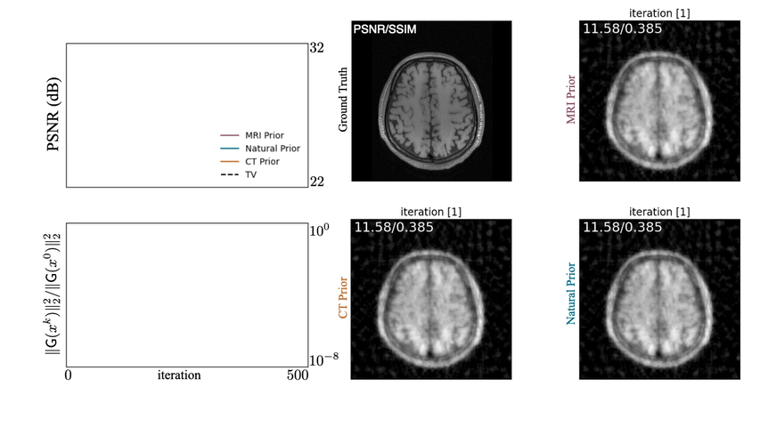

|

|
Deep model-based architectures for inverse problems under mismatched priors
Shirin Shoushtari, Jiaming Liu, Yuyang Hu, Ulugbek S. Kamilov
IEEE JSAIT, 2022
arXiv
/
project page
This paper investigate Shift Distribution in PnP methods and provides numerical and theoretical justifications.
|